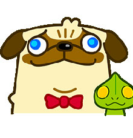

Обо мне
Я умный, милый, обаятельный и в меру упитанный мопс.

Мой загадочный друг
Мы с Каспером лучшие друзья. Он конечно внешне не такой милый как я, но мне нравиться с ним играть. Он загадочный и похож на инопланетянина.

Мое главное занятие
Я могу спать везде и всегда - дома на подоконнике, на всех кроватях и диванах, а особенно в машине у мамы на ручках. Меня дома называют "спящая красавица"

Мои хобби
Я собака-компаньон. Что это значит на деле? На самом деле долгие прогулки с хозяином - это не про меня. А вот красиво лежать на диване - здесь нет мне равных.